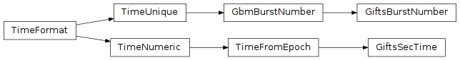

GIFTS Mission Epoch (gdt.missions.gifts.time)¶
Note
The GIFTS mission epoch implementation and this document are currently based on those provided by the Fermi Gamma-ray Data Tools, and may be revised in future versions.
The GIFTS Mission epoch, also called the GIFTS Mission Elapsed Time (MET) is
the number of seconds elapsed since January 1, 2001, 00:00:00 UTC, including
leap seconds. We have defined a specialized epoch to work with Astropy Time
objects so that GIFTS MET can be easily converted to/from other formats and time
scales.
To use this, we import and create an astropy Time object with a gifts
format:
>>> from gdt.missions.gifts.time import Time
>>> gifts_met = Time(697422649, format='gifts')
>>> gifts_met
<Time object: scale='tt' format='gifts' value=697422649.0>
To retrieve the GPS timestamp:
>>> gifts_met.gps
1359765062.0
The Astropy Time object readily converts it, with the
reverse conversion also possible:
>>> gps_time = Time(gifts_met.gps, format='gps')
>>> gps_time
<Time object: scale='tai' format='gps' value=1359765062.0>
>>> gps_time.gifts
697422649.0
This returns the original GIFTS MET as execpted. All time conversions provided by Astropy are possible, along with time conversions between other missions within the GDT.
In addition to time conversions, all time formatting available in Astropy is also available here. For example, we can format the GIFTS MET in ISO format:
>>> gifts_met.iso
'2023-02-07 00:31:53.184'
Finally, there is a specialized format associated with the GIFTS epoch, which allows us to output the format for GIFTS burst numbers, which is based on time:
>>> gifts_met.gifts_bn
'230207021'
Reference/API¶
gdt.missions.gifts.time Module¶
Classes¶
|
Represents the number of seconds elapsed since Jan 1, 2001, 00:00:00 UTC, including leap seconds |
|
Represent date as GIFTS burst number. |
|
Represent and manipulate times and dates for astronomy. |
Class Inheritance Diagram¶
